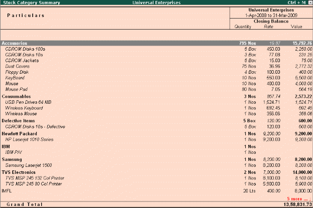

Stock Category
In many cases, you may want to classify stock items which are similar in nature but are grouped under different Stock Groups. Tally.ERP 9 provides you a feature namely, Stock Categories, which allows parallel classification of stock items to separate categories besides grouping.
In Tally.ERP 9 you can create stock items and group under the respective groups and parallel classify them under the respective Stock Categories. You could however, interchange the stock category or stock group based on your convenience and reporting requirements.
To enable Stock categories,
Go to Gateway of Tally > F11: Inventory Features
# Set Maintain Stock Categories to Yes
To create Stock Categories,
Go to Gateway of Tally > Inventory Info. > Stock Categories > Create
# Specify the Name for the Category
# Select Primary or the parent Stock Category from the list
To view Stock Category Report,
Go to Gateway of Tally > Display > Statements of Inventory > Categories
# Select the required Stock Category or select Primary to display all Stock Categories
